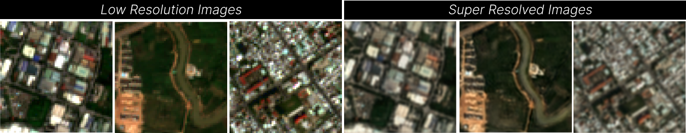

Aditya Retnanto, Son Le, Sebastian Mueller, Armin Leitner, Michael Riffler, Konrad Schindler, Yohan Iddawela
Asian Development Bank · GeoVille Information Systems and Data Processing GmbH · ETH Zürich
arXiv · ADB Economics Working Paper No. 823 · Code · ADB project page

Sentinel-2 imagery is free, global, and refreshed every few days, but its 10 m pixels are too coarse to resolve houses, streets, and other fine urban features. High-resolution commercial imagery is expensive and patchy, which matters most in the developing regions where the Asian Development Bank works. Sen4x is a hybrid super-resolution model that raises Sentinel-2 imagery 4×, to 2.5 m, while staying faithful to what is on the ground.
My contributions: large-scale computing, computer vision, and deep learning.
Single-image super-resolution (SISR) produces sharp results but can hallucinate structures. Multi-image super-resolution (MISR) stays close to the physical signal but tends to look blurry. Sen4x combines the two in a single end-to-end network:
Instead of judging super-resolution by how it looks, we evaluate it on a downstream task: 7-class urban land-cover segmentation in Hanoi, Vietnam (buildings, sealed surfaces, water, forest, grassland, cropland, bare soil), using a SATLAS-based classifier. Standard image-quality metrics such as PSNR and SSIM turned out to correlate poorly with segmentation accuracy. Sen4x beats every SISR and MISR baseline on this task, improving mIoU by 2.7 points over SISR alone and 12.9 points over MISR alone.